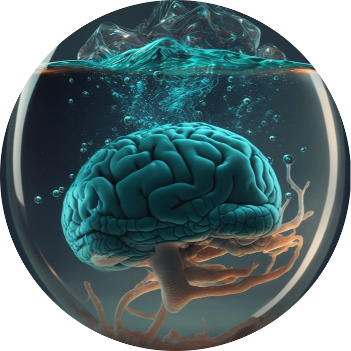
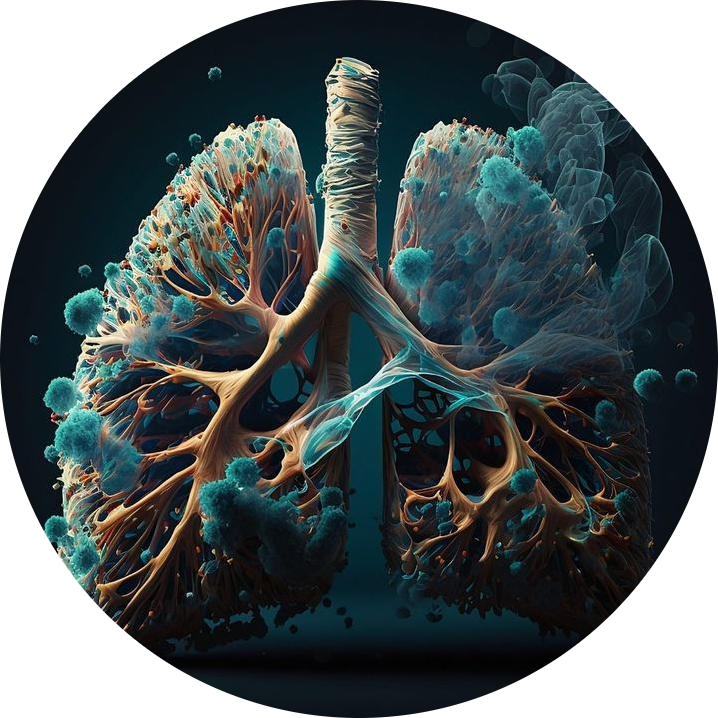
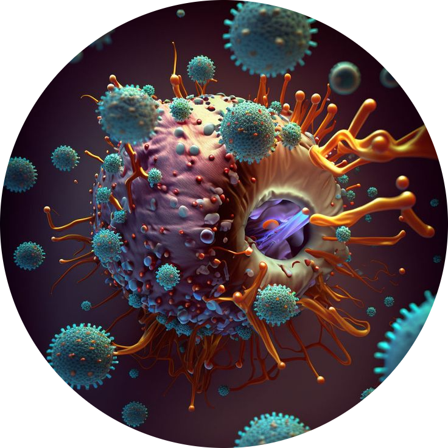
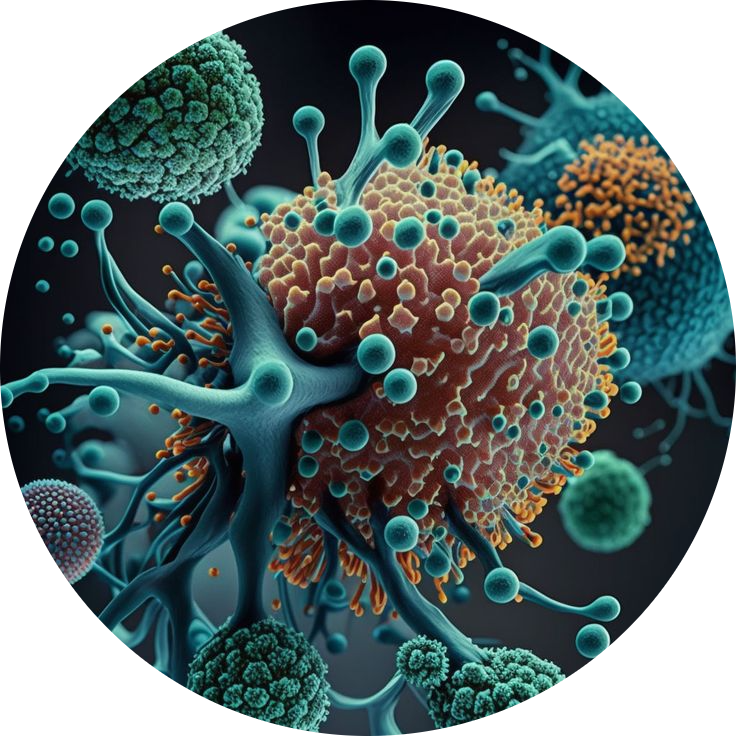

Virtual Laboratory
Would you like to become part of the virtual lab community? You are in the right place; fill out the form and contribute to the future of artificial intelligence.

Neuroplasticity

One of the most fascinating discoveries about the brain is its ability to rewire itself, a phenomenon known as neuroplasticity. With the help of AI, researchers have uncovered how specific regions of the brain can adapt after injury, compensating for lost functions or developing new abilities. For instance, AI has been used to analyze brain activity in stroke patients, revealing patterns that guide rehabilitation efforts and improve recovery outcomes.
Here are some key insights from this research:
Here are some key insights from this research:
- AI models are able to detect brain activity patterns during rehabilitation.
- Neuroplasticity allows the brain to reassign functions after injury.
- New treatments focus on enhancing brain's adaptability post-injury.
- Neurogenesis: Creating new neurons after injury
- Synaptic plasticity: Strengthening neural connections
Lungs' Self-Repair Mechanisms

AI has helped researchers uncover groundbreaking insights about the lungs' self-repair mechanisms. Certain cells in the lungs, called basal cells, can regenerate damaged tissue by transforming into other specialized cell types. AI has been pivotal in analyzing lung damage and aiding in the development of therapies.
Key findings include:
Key findings include:
- Basal cells have regenerative capabilities to repair lung damage.
- AI accelerates the understanding of lung regeneration.
- New treatments for lung diseases like COPD are being explored.
- Stem cell therapy for lung tissue regeneration
- Targeted drug delivery using AI analysis
Behavior of Cells at a Molecular Level

AI has enabled deep analysis of cells at a molecular level, revolutionizing our understanding of diseases like cancer. This is achieved through machine learning models that help in discovering new biomarkers and improving personalized treatments.
Key areas of advancement:
Key areas of advancement:
- AI improves cell classification and gene expression analysis.
- Deep learning models for cell image analysis
- Single-cell RNA sequencing analysis using AI
- Machine learning identifies cellular interactions and disease markers.
- Personalized therapies, including immunotherapies, are evolving.
Genetic Material

AI has enabled breakthroughs in analyzing DNA sequences and understanding genetic disorders. By predicting DNA folding patterns, AI plays a key role in advancing precision medicine.
Key applications of AI:
Key applications of AI:
- AI decodes complex DNA sequences and predicts mutations.
- Next-generation sequencing analysis with AI
- Genetic variant prediction using machine learning
- Genetic variations are linked to disease development.
- AI helps develop personalized medical treatments based on genetic makeup.